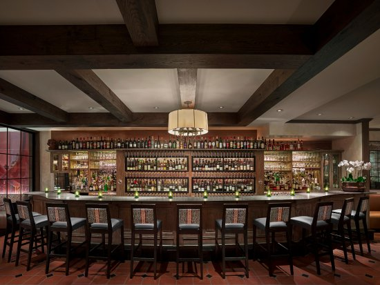
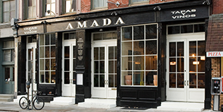

Make the most of your Philadelphia vacation by checking out these top-rated restaurants and activities with in city.

Grab lunch to go at The Reading Terminal Market and enjoy it on The Constitution Center lawn.

Take a scroll on the cherry street pier and enjoy local arts and ice cream with a view of the historicity of the city of brotherly love.
After your afternoon at The Constitution Center wander down to South Street for some eclectic shopping and a Federal Donut!

For an upscale philly experience we recommend visiting Amanda or panorama for lunch or dinner.
  View the Panorama Menu here View the Amada Menu here